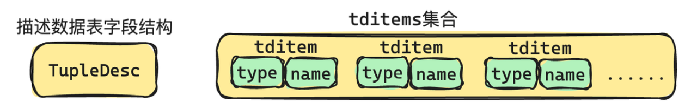
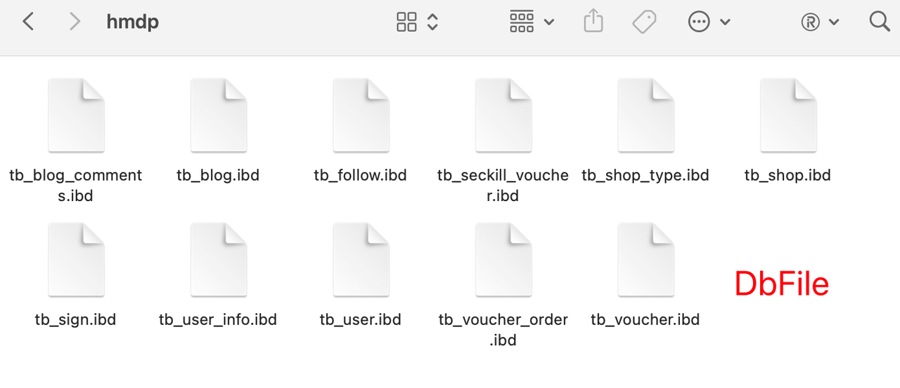
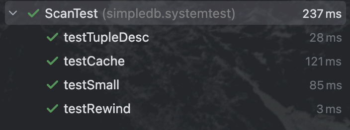
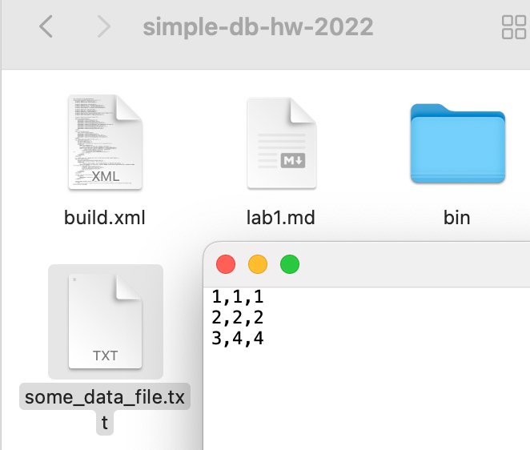

MIT6.5830-Lab1
前段时间学习一下 MySQL，正好准备一个手撕轮子项目，就准备完成这个 MIT6.5830 的数据库课程。Lab1 主要是完成一些简单的数据库定义以及实现简单的全表扫描。
任务目录
exercise1：实现元组以及元组属性字段
exercise2：实现数据库目录，包含数据库现有的表信息
exercise3：实现BufferPool，将内存读取过的数据页缓存下来
exercise4：实现页面id、数据记录id以及Page类
exercise5：实现磁盘文件的接口HeapFile，通过HeapFile可以从磁盘读写数据
exercise6：实现全表扫描
Exercise1
实现Tuple、TupleDesc两个类
在数据库中，行被称为元组(tuple)或记录(record)，列称为字段(field)。tuple元组在数据库中是一组Field对象的集合。

TupleDesc类

参数：
private CopyOnWriteArrayList<TDItem> tdItems
TupleDesc中提供了一个TDItem内部辅助类，类中定义了
Type fieldType和String fieldName两个成员变量（Type是枚举类型，当前只实现了INT_TYPE和STRING_TYPE）。
方法：
初始化方法：
public TupleDesc(Type[] typeAr, String[] fieldAr)1
2
3
4
5
6
7
8
9
10public TupleDesc(Type[] typeAr, String[] fieldAr) {
// TODO: some code goes here
tdItems = new CopyOnWriteArrayList<>();
if (typeAr.length != fieldAr.length) {
throw new IllegalArgumentException();
}
for (int i = 0; i < typeAr.length; i++) {
tdItems.add(new TDItem(typeAr[i], fieldAr[i]));
}
}返回所有属性的迭代器：
public Iterator<TDItem> iterator()1
2
3
4
5
6
7public Iterator<TDItem> iterator() {
// TODO: some code goes here
if (tdItems == null) {
return null;
}
return tdItems.iterator();
}返回TupleDesc属性的数量：
public int numFields()返回第i个属性的属性名：
public String getFieldName(int i)返回第i个属性的属性类型：
public Type getFieldType(int i)根据属性名返回属性在tditem中的序号：
public int indexForFieldName(String name)返回此TupleDesc对应的元组所占字节大小：
public int getSize()1
2
3
4
5
6
7
8
9public int getSize() {
// TODO: some code goes here
int dataSize = 0;
for (int i = 0; i < numFields(); i++) {
// Type中存在getLen()方法，可获取INT_TYPE和STRING_TYPE字节数
dataSize += tdItems.get(i).fieldType.getLen();
}
return dataSize;
}合并两个TupleDesc：
public static TupleDesc merge(TupleDesc td1, TupleDesc td2)判断两个TupleDesc是否相等：
public boolean equals(Object o)相等条件：两个TupleDesc的属性数量相等，且tditem1[i]和tditem2[i]属性类型相同。
1
2
3
4
5
6
7
8
9
10
11
12
13
14
15
16
17public boolean equals(Object o) {
// TODO: some code goes here
// instanceof 测试左边的对象是否是右边“特定类or其子类”的实例
if (!(o instanceof TupleDesc)) {
return false;
}
TupleDesc other = (TupleDesc) o;
if (this.numFields() != other.numFields() || this.tdItems.size() != other.tdItems.size()) {
return false;
}
for (int i = 0; i < this.numFields(); i++) {
if (!this.getFieldType(i).equals(other.getFieldType(i))) {
return false;
}
}
return true;
}- instanceof
语法：
boolean result = object instanceof Class（该类、父类、接口）;用法：① 判断object对象是否是class类实例； ② 判断object对象是否是class类的子类的实例； ② 判断object对象是否是接口实现类的实例。

1
2
3
4
5
6
7
8
9
10
11
12
13
14
15
16
17System.out.println("===============instanceof阶段测试1===============");
// 判断object对象是否为 class类本身的实例
System.out.println(computer instanceof Computer); // true
// 判断object对象是否为 class类的子类的实例
System.out.println(computer instanceof Machine); // true
// 判断object对象是否为 接口的实现类的实例
System.out.println(mouse instanceof usb); // true
System.out.println("===============instanceof阶段测试2===============");
// 所有对象都为Object类
System.out.println(computer instanceof Object); // true
System.out.println(mouse instanceof Object); // true
System.out.println("===============instanceof阶段测试3===============");
// null不是任何类的实例
System.out.println(null instanceof Object); // false
System.out.println(null instanceof Computer); // false- isInstance
语法：
boolean result = Class.class.isInstance(object);用法：同上（判断object对象能否被转化为这个Class类）
返回该TupleDesc的哈希值：
public int hashCode()展示TupleDesc的所有属性类型+属性名：
public String toString()
Tuple类

参数：
private TupleDesc td;元组的id：
private RecordId rid;存储Tuple中所有字段：
CopyOnWriteArrayList<Field> fields;Field接口，包含compare()、getType()、equals()、toString()方法，IntField 和 StringField 类实现了该接口。
方法：
构造方法：
public Tuple(TupleDesc td)获得元组对应的字段属性：
public TupleDesc getTupleDesc()获得元组id：
public RecordId getRecordId()设置元组id：
public void setRecordId(RecordId rid)为Tuple的第i个字段赋值：
public void setField(int i, Field f)1
2
3
4
5
6
7
8public void setField(int i, Field f) {
// TODO: some code goes here
if (i >= fields.size()) {
fields.add(f);
} else {
fields.set(i, f);
}
}获得第i个字段：
public Field getField(int i)展示该Tuple的所有字段值：
public String toString()返回元组字段的迭代器：
public Iterator<Field> fields()重置TupldeDesc：
public void resetTupleDesc(TupleDesc td)

Exercise2
实现Catalog类

Catalog类
Catalog管理着数据库中的所有表：

dbFile是什么 —— 每一个DbFile对应数据库中的一张表。


参数：
表id与表的映射：
ConcurrentHashMap<Integer, Table> tableIdMap;Table类包含参数tableName、pkeyField（表中的主键）、dbFile（存储表内容）
表名与表id的映射（方便通过tableName获取table）：
ConcurrentHashMap<String, Integer> tableNameMap;
方法：
构造方法：
public Catalog()向Catalog中添加表：
public void addTable(DbFile file, String name, String pkeyField)根据表明获取表id：
public int getTableId(String name)通过表id获取表TupleDesc：
public TupleDesc getTupleDesc(int tableId)通过表id获取表的内容dbFile：
public DbFile getDatabaseFile(int tableId)通过表id获取表的主键：
public String getPrimaryKey(int tableId)返回tableId的迭代器：
public Iterator<Integer> tableIdIterator()1
2
3
4public Iterator<Integer> tableIdIterator() {
// TODO: some code goes here
return tableIdMap.keySet().iterator();
}通过表id获取表名：
public String getTableName(int id)清空Catalog：
public void clear()

Exercise3
实现BufferPool的构造器和getPage()方法
BufferPool类
参数：
默认page大小：
private static final intDEFAULT_PAGE_SIZE= 4096;private static intpageSize=DEFAULT_PAGE_SIZE;BufferPool能获取的page数量：
private final int numPages;pageId到page的映射：
private final Map<PageId, Page> bufferPools = new ConcurrentHashMap<>();
方法：
构造方法：
public BufferPool(int numPages)从BufferPool中根据pageId获取对应的page，如果BufferPool中不存在就去磁盘搜索并保存到BufferPool：
public Page getPage(TransactionId tid, PageId pid, Permissions perm)1
2
3
4
5
6
7
8
9
10public Page getPage(TransactionId tid, PageId pid, Permissions perm)
throws TransactionAbortedException, DbException {
// TODO: some code goes here
if(!bufferPools.containsKey(pid)) {
DbFile file = Database.getCatalog().getDatabaseFile(pid.getTableId());
Page page = file.readPage(pid);
bufferPools.put(pid, page);
}
return bufferPools.get(pid);
}获取page的方法有且只有
BufferPool.getPage()。通过一个具体的索引页id就可以找到一张特定的数据表，所以我们可以认为：“在一个数据页上只能存储同一张表的数据”。

- 数据组织和查询效率
连续存储：将同一张表的数据存储在连续的页面中，有助于提高查询效率。读取一个表的数据时，可以通过顺序扫描这些页面，减少磁盘寻道时间。
索引效率：索引通常是基于表的。当页面只存储一张表的数据时，索引查找可以更快地定位数据。
- 数据一致性和隔离
事务管理：事务的隔离级别要求对表的操作是可预测和隔离的。将不同表的数据混合在同一个页面中，可能会导致复杂的锁管理和数据一致性问题。
日志记录和恢复：数据库的日志记录机制（如WAL日志）通常基于表进行管理。将不同表的数据混合在一个页面中，恢复过程会变得更加复杂。
- 空间管理和回收
空间利用：将同一张表的数据放在同一页面中，可以更有效地利用空间。当需要扩展表时，只需分配新的页面，不需要考虑不同表的数据混合导致的空间浪费问题。
垃圾回收：当删除数据时，页面中的空闲空间可以更容易地被同一表的新数据使用。如果不同表的数据混合在一起，空间回收和再利用会更加困难。
- 设计和实现的简化
代码复杂度：将每个页面绑定到一个特定的表，可以简化数据库管理系统的实现。比如，代码中的
Database.getCatalog().getDatabaseFile(pid.getTableId())就是通过表ID来获取相关的数据库文件（包含多个页面）的。模块化设计：这种设计方式使得数据库系统的模块化和维护变得更简单。每个模块（如页面管理、缓冲区管理、事务管理）可以专注于处理单一表的数据。
—— chatGPT解答
Exercise4
实现HeapPageId类、RecordId类、HeapPage类

HeapPageId类
参数：
page所在的数据表id：
private int tableId;page的序号：
private int pgNo;
方法：
构造方法：
public HeapPageId(int tableId, int pgNo)返回该page所在的数据表id：
public int getTableId()返回该page的序号：
public int getPageNumber()返回该pageId的哈希值：
public int hashCode()1
2
3
4public int hashCode() {
// TODO: some code goes here
return getPageNumber() * 1000 + getTableId();
}判断两个PageId对应的page是否相等：
public boolean equals(Object o)相等条件：两个PageId的pageNo和tableId相等。
1
2
3
4
5
6
7
8public boolean equals(Object o) {
// TODO: some code goes here
if (o instanceof HeapPageId) {
HeapPageId other = (HeapPageId) o;
return this.getPageNumber() == other.getPageNumber() && this.getTableId() == other.getTableId();
}
return false;
}
RecordId类
参数：
元组id所在页的pageId：
private PageId pid;元组的序号：
private int tupleNo;
方法：
构造方法：
public RecordId(PageId pid, int tupleno)返回元组的序号：
public int getTupleNumber()返回元组所在页的pageId：
public PageId getPageId()判断两个tuple是否相同：
public boolean equals(Object o)返回 tuple的哈希值：
public int hashCode()1
2
3
4public int hashCode() {
// TODO: some code goes here
return this.pid.getPageNumber() * 100 + this.pid.getTableId() * 10 + this.tupleNo;
}
HeapPage类
参数：
pageId：
private final HeapPageId pid;page所对应表格的tupleDesc：
private final TupleDesc td;page中槽slot的bitmap，判断该页的slot是否被占用：
final byte[] header;page中的元组：
final Tuple[] tuples;page中slot的数量：
private final int numSlots;
方法：
构造方法：
public HeapPage(HeapPageId id, byte[] data)返回每个page中包含的tuple数量：
private int getNumTuples()1
2
3
4
5
6private int getNumTuples() {
// TODO: some code goes here
int page_bits = BufferPool.getPageSize() * 8;
int tuple_bits = (td.getSize() * 8 + 1);
return page_bits / tuple_bits; // 进行下取整
}
数据库中每个page的tuple需要 tuple size*8 bit 的内容大小和 1bit 的header大小。
返回page中的header大小：
private int getHeaderSize()1
2
3
4private int getHeaderSize() {
// TODO: some code goes here
return (int) Math.ceil((double) getNumTuples() / 8); // 进行上取整
}返回pageId：
public HeapPageId getId()判断第i个slot槽是否为空：
public boolean isSlotUsed(int i)1
2
3
4
5
6
7
8
9public boolean isSlotUsed(int i) {
// TODO: some code goes here
// 计算在header中的位置(哪一个字节)
int iTh = i / 8;
// 计算具体在bitmap中的位置(哪一个比特位，或者理解为header字节位中的比特偏移量)
int bitTh = i % 8;
int onBit = (header[iTh] >> bitTh) & 1;
return onBit == 1;
}
header的存储方式是byte数组，每个byte包含8个bit，例如某header的状态如下：{11111111, 11111111, 00000011}（byte的右侧为低位），此时先通过iTh=i/8变量确定槽i在哪一个byte中，再通过bitTh=i%8确定槽i在byte字节中具体是哪一个bit，最后通过 & 异或确定该bit是0或1。
- 返回page中空slot的数量：
public int getNumUnusedSlots()
1 | public int getNumUnusedSlots() { |
- 返回page中所有tuple的迭代器（不包括空slot）：
public Iterator<Tuple> iterator()
1 | public Iterator<Tuple> iterator() { |
HeapPage中的tuple是通过数组存储的，为了访问迭代器方法需要将tuple数组转换成tuple集合。
Exercise5
实现HeapFile类

HeapFile类
一个HeapFile就是一张数据表。

参数：
表中的内容：
private final File f;表的属性行：
private final TupleDesc td;
方法：
构造方法：
public HeapFile(File f, TupleDesc td)返回表的内容：
public File getFile()返回标识表文件的唯一id (heapfile绝对路径的哈希值)：
public int getId()1
2
3
4public int getId() {
// TODO: some code goes here
return f.getAbsolutePath().hashCode();
}返回表的属性行：
public TupleDesc getTupleDesc()返回表的page数目：
public int numPages()1
2
3
4
5
6public int numPages() {
// TODO: some code goes here
long file_length = getFile().length(); // 文件长度
int pageSize = BufferPool.getPageSize(); // 每个页面的大小
return (int) (file_length / pageSize);
}从表文件中读取page：
public Page readPage(PageId pid)readPage()方法仅会被BufferPool中的getPage()方法调用，再其他地方获取page时也都要调用BufferPool的getPage()方法，这也是BufferPool的意义。利用 RandomAccessFile 来读写 HeapFile 中的Page：
RandomAccessFile是 Java 中用于对文件进行读写操作的类，其支持随机访问文件内容的特性。这里的随机seek()方法指的是可以通过指定文件中的任意位置（偏移量）来读取或写入数据，而不是像顺序读写那样只能按照文件中数据的顺序逐个访问。1
2
3
4
5
6
7
8
9
10
11
12
13
14
15
16
17
18
19
20
21
22
23
24
25
26
27
28
29
30
31
32
33
34
35
36
37
38
39
40public Page readPage(PageId pid) {
// TODO: some code goes here
int tableId = pid.getTableId();
int pgNo = pid.getPageNumber();
int offset = pgNo * BufferPool.getPageSize();
// randomaccessfile try-catch-finally
RandomAccessFile randomAccessFile = null;
try {
randomAccessFile = new RandomAccessFile(f, "r");
// 保证pid页面的结束位置不大于文件randomFile的长度
if ((long) pgNo * BufferPool.getPageSize() > randomAccessFile.length()) {
randomAccessFile.close();
throw new IllegalArgumentException(String.format("table %d page %d is invalid", tableId, pgNo));
}
byte[] bytes = new byte[BufferPool.getPageSize()];
// 移动偏移量到页面的开头
randomAccessFile.seek(offset);
// 不要在调用时将整个表加载到内存中，这将导致非常大的表出现内存不足错误
int read = randomAccessFile.read(bytes, 0, BufferPool.getPageSize());
if (read != BufferPool.getPageSize()) {
throw new IllegalArgumentException(String.format("table %d page %d read %d bytes not equal to BufferPool.getPageSize()",
tableId, pgNo, read));
}
HeapPageId heapPageId = new HeapPageId(pid.getTableId(), pid.getPageNumber());
return new HeapPage(heapPageId, bytes);
} catch (Exception e) {
e.printStackTrace();
} finally {
if (randomAccessFile != null) {
try {
randomAccessFile.close();
} catch (IOException e) {
e.printStackTrace();
}
}
}
throw new IllegalArgumentException(String.format("table %d page %d is invalid", tableId, pgNo));
}返回表文件中所有heapPage中元组的迭代器：
public DbFileIterator iterator(TransactionId tid)
1
2
3
4
5
6
7
8
9
10
11
12
13
14
15
16
17
18
19
20
21
22
23
24
25
26
27
28
29
30
31
32
33
34
35
36
37
38
39
40
41
42
43
44
45
46
47
48
49
50
51
52
53
54
55
56
57
58
59
60
61
62
63
64
65
66
67
68
69
70
71
72
73
74
75
76
77
78
79
80public DbFileIterator iterator(TransactionId tid) {
// TODO: some code goes here
return new HeapFileIterator(tid, this);
}
/**
* 迭代器内部类
*/
private static class HeapFileIterator implements DbFileIterator {
private final TransactionId tid;
private final HeapFile heapFile;
/**
* 元组迭代器
*/
private Iterator<Tuple> tupleIterator;
/**
* 当前页面索引
*/
private int index;
public HeapFileIterator(TransactionId tid, HeapFile heapFile) {
this.tid = tid;
this.heapFile = heapFile;
}
public void open() throws DbException, TransactionAbortedException {
index = 0;
tupleIterator = getTupleIterator(index);
}
private Iterator<Tuple> getTupleIterator(int pageNumber) throws TransactionAbortedException, DbException {
if (pageNumber >= 0 && pageNumber < heapFile.numPages()) {
HeapPageId heapPageId = new HeapPageId(heapFile.getId(), pageNumber);
HeapPage heapPage = (HeapPage) Database.getBufferPool().getPage(tid, heapPageId, Permissions.READ_ONLY);
return heapPage.iterator();
} else {
throw new DbException(String.format("heapFile %d does not exist in page %d", heapFile.getId(), pageNumber));
}
}
public boolean hasNext() throws DbException, TransactionAbortedException {
if (tupleIterator == null) {
return false;
}
while(!tupleIterator.hasNext()) {
// 如果当前页面没有元组，则切换到下一个页面
index++;
if(index < heapFile.numPages()) {
tupleIterator = getTupleIterator(index);
} else {
return false;
}
}
// 如果当前页面还有元组，则返回true
return true;
}
public Tuple next() throws DbException, TransactionAbortedException, NoSuchElementException {
if (tupleIterator == null || !tupleIterator.hasNext()) {
throw new NoSuchElementException();
}
return tupleIterator.next();
}
public void rewind() throws DbException, TransactionAbortedException {
close();
open();
}
public void close() {
tupleIterator = null;
}
}

Exercise6
实现SeqScan类：该类应该能通过构造方法传入的tableId参数扫描数据表中的所有元组，并使用
dbFile.iterator()访问元组
SeqScan类
参数：
事务id：
private TransactionId tid;需要扫描的数据表id：
private int tableid;表的别名（返回TupleDesc时，要在fieldName前加上tableAlias字段）：
private String tableAlias;扫描数据表要访问的dbFile迭代器：
private DbFileIterator dbFileIterator;
方法：
构造方法：
public SeqScan(TransactionId tid, int tableid, String tableAlias)获取表名：
public String getTableName()获取表的alias别名：
public String getAlias()查找新的表（重新对tableId赋值）：
public void reset(int tableid, String tableAlias)返回数据表的tupleDesc，需要在fieldName之前添加alias别名：
public TupleDesc getTupleDesc()1
2
3
4
5
6
7
8
9
10
11public TupleDesc getTupleDesc() {
// TODO: some code goes here
TupleDesc td_old = Database.getCatalog().getTupleDesc(tableid);
String[] names = new String[td_old.numFields()];
Type[] types = new Type[td_old.numFields()];
for (int i = 0; i < td_old.numFields(); i++) {
names[i] = tableAlias + "." + td_old.getFieldName(i);
types[i] = td_old.getFieldType(i);
}
return new TupleDesc(types, names);
}遍历表用到的方法
打开迭代器：
public void open()如果有更多元组可用，则为True，如果没有元组或未打开迭代器则为False：
public boolean hasNext()根据迭代器获取下一个元组：
public Tuple next()关闭迭代器（置空）：
public void close()将迭代器重置为起始位置（关闭、开启）：
public void rewind()
1
2
3
4
5
6
7
8
9
10
11
12
13
14
15
16
17
18
19
20
21
22
23
24
25
26
27
28
29
30
31
32
33
34
35
36
37public void open() throws DbException, TransactionAbortedException {
// TODO: some code goes here
dbFileIterator = Database.getCatalog().getDatabaseFile(tableid).iterator(tid);
dbFileIterator.open();
}
public boolean hasNext() throws TransactionAbortedException, DbException {
// TODO: some code goes here
if (dbFileIterator == null)
throw new NoSuchElementException("The dbFileIterator is null");
return dbFileIterator.hasNext();
}
public Tuple next() throws NoSuchElementException,
TransactionAbortedException, DbException {
// TODO: some code goes here
if (dbFileIterator == null) {
throw new NoSuchElementException("The dbFileIterator is null");
}
Tuple t = dbFileIterator.next();
if (t == null) {
throw new NoSuchElementException("No more tuples");
}
return t;
}
public void close() {
// TODO: some code goes here
dbFileIterator = null;
}
public void rewind() throws DbException, NoSuchElementException,
TransactionAbortedException {
// TODO: some code goes here
close();
open();
}

测试
Test：
select * from some_data_file
在项目根目录下创建some_data_file.txt文件：

用 ant 编译出dist目录下simpleDB的jar包：

运行测试，展示结果：